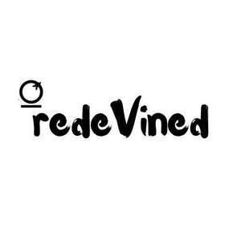

Trade Mark Journal No.2025/042 17 October 2025
UK00004270575 28 September 2025 (5,32,33,35)
Mark 1
Mark 2

- Class 5
- Medicinal drinks; Drinks (Medicinal -); Tisanes [medicated beverages].
- Class 32
- Non alcoholic aperitifs; Cocktails, non-alcoholic; Non-alcoholic cocktails; Non-alcoholic beer-based cocktails; Non-alcoholic fruit cocktails; Non-alcoholic drinks; Non-alcoholic malt drinks; Carbonated non-alcoholic drinks; Non-alcoholic cocktail mixes; Non-alcoholic beer flavored beverages; Aperitifs, non-alcoholic; Cordials (non-alcoholic beverages); Non-alcoholic fruit drinks; Non-alcoholic beverages; Beverages (Non-alcoholic -); Isotonic non-alcoholic drinks; Non-alcoholic malt beverages; Beer-based cocktails; Non-alcoholic beverages flavoured with coffee; Non-alcoholic beverages flavoured with tea; Non-alcoholic malt free beverages [other than for medical use]; Non-alcoholic beers; Non-alcoholic soda beverages flavoured with tea; Non-alcoholic carbonated beverages; Non-alcoholic flavored carbonated beverages; Root beers, non-alcoholic beverages; Alcohol free aperitifs; Non-alcoholic beer; Non-alcoholic beverages flavored with tea; Cordials [non-alcoholic]; Non-alcoholic cordials; Non-alcoholic syrups for making beverages; Syrups for making non-alcoholic beverages; Non-alcoholic beverages flavored with coffee; Sarsaparilla [non-alcoholic beverage]; Aloe vera drinks, non-alcoholic; Fruit beverages (non-alcoholic); Non-alcoholic cocktail bases; Non-alcoholic honey-based beverages; Honey-based beverages (Non-alcoholic -); Non-alcoholic bitters; Extracts for making non-alcoholic beverages; Kvass [non-alcoholic beverages]; Alcohol free beverages; Non-alcoholic wines; Non-alcoholic wine; Non-alcoholic fruit vinegar beverages; Beer-based beverages; Smoothies [non-alcoholic fruit beverages]; Non-alcoholic vegetable juice drinks; Non-alcoholic beverages with tea flavor; Fruit-based soft drinks flavored with tea; Fruit flavoured carbonated drinks; Cola drinks; Fruit flavoured drinks; Kvass [non-alcoholic beverage]; Non-alcoholic sparkling fruit juice drinks; Low alcohol beer; Flavoured carbonated beverages; Cider, non-alcoholic; Non-alcoholic dried fruit beverages; Squashes [non-alcoholic beverages]; Non-alcoholic beverages containing fruit juices; Fruit flavored drinks; Fruit-based beverages; Fruit juice beverages (Non-alcoholic -); Non-alcoholic fruit juice beverages; Non-alcoholic grape juice beverages; Non-alcoholic beverages containing vegetable juices; Vitamin fortified non-alcoholic beverages; Frozen fruit-based drinks; Syrups and other non-alcoholic preparations for making beverages; Soft drinks flavored with tea; Fruit flavored soft drinks; Sorbets [beverages]; Alcohol free cider; Alcohol free wine; Syrups for making fruit-flavored drinks.
- Class 33
- Alcoholic cocktails; Alcoholic fruit cocktail drinks; Low alcoholic drinks; Prepared alcoholic cocktails; Alcoholic aperitifs; Alcoholic cocktail mixes; Rum [alcoholic beverage]; Pre-mixed alcoholic beverages, other than beer-based; Pre-mixed alcoholic beverages; Cordials [alcoholic beverages]; Alcoholic beverages [except beers]; Alcoholic beverages except beers; Alcoholic beverages (except beers); Alcoholic tea-based beverage; Alcoholic cocktails in the form of chilled gelatins; Alcoholic beverages, except beer; Alcoholic beverages (except beer); Beverages (Alcoholic -), except beer; Alcoholic cocktails containing milk; Alcoholic carbonated beverages, except beer; Sugarcane-based alcoholic beverages; Alcoholic cordials; Alcoholic aperitif bitters; Alcoholic bitters; Alcoholic seltzers; Flavoured brewed alcoholic malt beverages, except beers; Alcoholic coffee-based beverage; Alcoholic beverages of fruit; Alcoholic fruit beverages; Cocktails; Flavored brewed alcoholic malt beverages, except beers; Alcoholic wines; Wine-based drinks; Alcoholic energy drinks; Baijiu [Chinese distilled alcoholic beverage]; Rum-based beverages; Aperitifs with a distilled alcoholic liquor base; Grain-based distilled alcoholic beverages; Nira [sugarcane-based alcoholic beverage]; Fruit (Alcoholic beverages containing -); Alcoholic beverages containing fruit; Wine-based beverages; Alcoholic essences; Alcoholic preparations for making beverages; Preparations for making alcoholic beverages; Flavored tonic liquors; Alcoholic punches; Prepared wine cocktails; Alcoholic jellies; Alcoholic extracts; Beverages containing wine [spritzers]; Extracts of spiritous liquors; Alcoholic fruit extracts; Fruit extracts, alcoholic.
- Class 35
- Retail services in relation to alcoholic beverages (except beer); Wholesale services in relation to alcoholic beverages (except beer).
Nkem Ikegulu